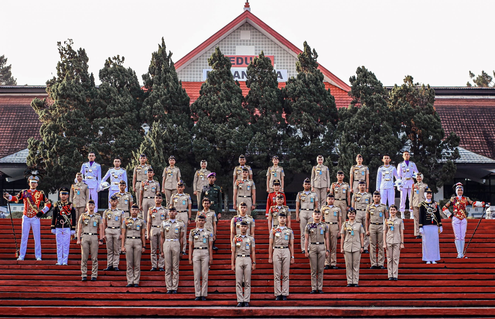
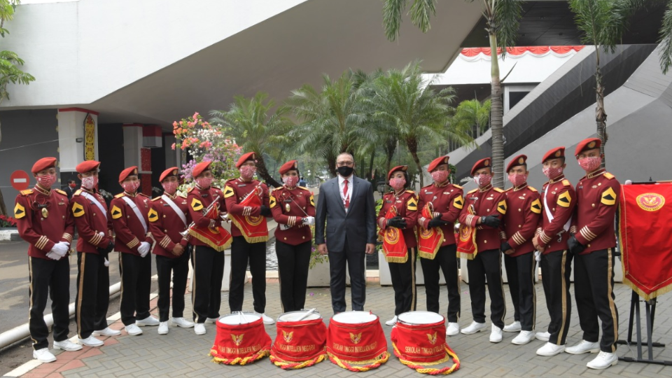
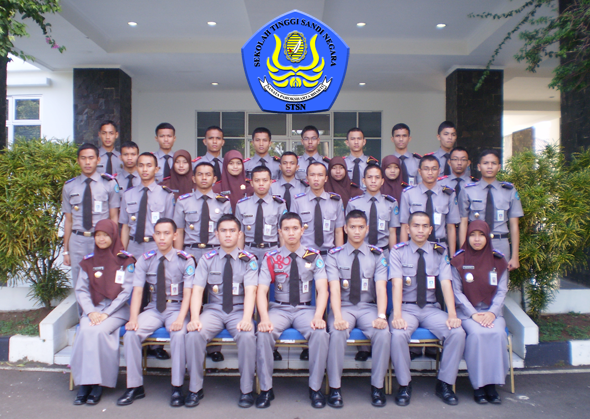

1. PKN STAN (Politeknik Keuangan Negara STAN)

PKN STAN adalah sekolah kedinasan di bawah Kementerian Keuangan RI yang menyelenggarakan Program Studi Diploma di Bidang Keuangan Negara. Dulunya, sekolah ini dikenal dengan nama STAN sampai akhirnya pada tahun 2015, STAN secara resmi berubah nama menjadi PKN ST
PKN STAN memiliki 3 program studi, Program Diploma IV Akuntansi Sektor Publik, Program Diploma IV Manajemen Keuangan Negara, dan Program Diploma IV Manajemen Aset Publik. Lulusan Prodi D4 dapat diangkat menjadi Calon Pegawai Negeri Sipil (CPNS) di lingkungan Kementerian Keuangan, Kementerian/Lembaga lainnya atau Pemerintah Daerah sesuai dengan formasi/kebutuhan yang tersedia pada tahun yang bersangkutan.
Untuk mahasiswa yang masuk melalui jalur program reguler atau program afirmasi dari lulusan SMA sederajat, seluruh biaya pendidikan di PKN STAN dibebankan pada APBN. Namun, PKN STAN tidak memberikan uang saku kepada mahasiswa selama pendidikan.
Pada 2021, nilai Ujian Tulis Berbasis Komputer (UTBK) menjadi salah satu syarat administrasi pendaftaran PKN STAN. Akan tetapi untuk 2022 belum terdapat keputusan apakah nilai UTBK akan kembali digunakan.
Sekolah yang berlokasi di Bintaro Jaya, Banten ini memiliki 4 jurusan yang bisa dipilih bagi kalian yang tertatik di bidang keuangan negara.
- Jurusan Akuntansi: D-III Akuntansi dan D-IV Akuntansi
- Jurusan Pajak: D-III Pajak, D-III PBB/Penilai, dan Diploma I Pajak
- Jurusan Kepabeanan dan Cukai: D-III Kepabeanan dan Cukai, D-I Kepabeanan dan Cukai
- Jurusan Manajemen Keuangan: D-III Kebendaharaan Negara, D-III Manajemen Aset, dan D-I Kebendaharaan Negara
2. IPDN (Institut Pemerintahan Dalam Negeri)

Institut Pemerintahan Dalam Negeri (IPDN) adalah Lembaga Pendidikan Tinggi Kedinasan dalam lingkungan Kementerian Dalam Negeri.Kampusnya pun tersebar di beberapa daerah di Indonesia, antara lain yaitu Jakarta, Sumbar, Sulsel, Sulut, NTB, Papua, Kalbar dan Riau.
Diharapkan calon Praja memiliki dasar pengetahuan dan keterampilan yang memadai, kesehatan diri yang prima, kemampuan psikologis diri yang mampu berkembang secara potensial, integritas dan kejujuran diri yang terpercaya, kemampuan berkomunikasi yang efektif, dan kesiapan untuk bekerja di seluruh wilayah Negara Kesatuan Republik Indonesia.
Di IPDN, terdapat dua fakultas yang disediakan, yaitu:
- Fakultas Politik Pemerintahan: Program Studi Kebijakan Pemerintahan dan Program Studi Politik Pemerintahan
- Fakultas Manajemen Pemerintahan: Program Studi Manajemen Sumber Daya Manusia, Program Studi Manajemen Keuangan, Program Studi Manajemen Pembangunan, Program Studi Manajemen Pemerintahan, dan Program Studi Kebijakan Pemerintahan.
3. STIN (Sekolah Tinggi Intelijen Negara)

STIN adalah sekolah kedinasan yang ada di bawah naungan Badan Intelijen Negara. Tujuan STIN adalah menyelenggarakan pendidikan akademik di bidang intelijen dan dapat menyelenggarakan pendidikan profesi sesuai dengan ketentuan peraturan perundang-undangan. STIN membuka program S1 dengan dua jurusan yaitu Agen Intelijen dan Analisis Intelijen.
Sekolah ini mempunyai visi menjadi Perguruan Tinggi Intelijen bertaraf Internasional (World Class Intelligence College) yang mempunyai keunggulan dan kewibawaan dalam mendukung terwujudnya keamanan nasional.Selama kuliah di STIN, tidak dipungut biaya. Mahasiswa akan tinggal di asrama, mendapat konsumsi, dan seragam. Disebutkan juga bahwa setelah lulus kuliah, akan diangkat menjadi CPNS.
4. Politeknik Statistika STIS (Sekolah Tinggi Ilmu Statistik)

Politeknik Statistika STIS merupakan perguruan tinggi kedinasan program Diploma IV, yang dikelola oleh Badan Pusat Statistik sejak 1958, memberi kesempatan lulusan sekolah menengah umum jurusan IPA untuk dididik menjadi ahli statistik.
Melansir laman SPMB STIS, pada 2021 STIS membuka untuk Program Studi Statistika Program Diploma III, Program Studi Statistika Program Diploma IV, dan Program Studi Komputasi Statistik Program Diploma IV. Lulusan Program Diploma III akan diangkat sebagai calon Aparatur Sipil Negara (ASN) golongan II/c dan akan ditugaskan di Badan Pusat Statistik (BPS) di seluruh wilayah Indonesia.
Lulusan Program Diploma IV akan diangkat sebagai calon Aparatur Sipil Negara (ASN) golongan III/a dan akan ditugaskan di Badan Pusat Statistik (BPS)/Kementerian/Lembaga/Instansi lainnya di seluruh wilayah Indonesia. Selama masa pendidikan, mahasiswa dibebaskan dari biaya pendidikan (tanpa uang saku).
Sekolah Tinggi Ilmu Statistik (STIS) dulunya bernama Akademi Ilmu Statistik (AIS) merupakan perguruan tinggi kedinasan yang dikelola oleh Badan Pusat Statistik (BPS). Sekolah yang berlokasi di Jakarta Timur ini mempunyai tiga program studi, yaitu:
- Program Studi Diploma III Statistika
- Program Studi Diploma IV Statistika
- Program Studi Diploma IV Komputasi Statistik
5. STMKG (Sekolah Tinggi Meteorologi Klimatologi dan Geofisika)
Berdasarkan Peraturan Presiden Republik Indonesia No 35/2014, STMKG berada di bawah Badan Meteorologi Klimatologi dan Geofisika (BMKG). Sekolah ini bertujuan menghasilkan sumber daya manusia yang memiliki kompetensi dan berwawasan global di bidang meteorologi, klimatologi, geofisika serta instrumentasi meteorologi, klimatologi, dan geofisika.
STMKG memiliki program studi jenjang D4 yang meliputi:
- Meteorologi
- Klimatologi
- Geofisika
- Instrumentasi.
Mengutip Kompas.com, 10 Desember 2021, lulusan STMKG akan bekerja di Badan Meteorologi, Klimatologi, dan Geofisika sesuai ketentuan yang berlaku sejak dinyatakan lulus pendidikan, dan bersedia ditempatkan di seluruh wilayah Negara Kesatuan Republik Indonesia. Untuk STMKG, biaya pendidikan gratis. Namun, taruna dan taruni yang diterima akan ditarik biaya untuk keperluan seragam, atribut, dan lainnya.
6. POLTEKIP (Politeknik Pemasyarakatan) dan POLTEKIM (Politeknik Imigrasi)
Sekolah kedinasan Politeknik Ilmu Pemasyarakatan (Poltekip) dan Politeknik Imigrasi (Poltekim) adalah sekolah kedinasan di bawah Kementerian Hukum Dan Hak Asasi Manusia (Kemenkumham).Mengutip laman Poltekip, jurusan yang tersedia yaitu Manajemen Pemasyarakatan, Teknik Pemasyarakatan, dan Bimbingan Pemasyarakatan
Sementara itu melansir laman Poltekim, Poltekim melatih individu untuk bekerja dalam pekerjaan pemerintah di bidang imigrasi, baik untuk ditempatkan di kantor imigrasi di seluruh Indonesia atau di unit imigrasi di perwakilan luar negeri Indonesia.
Poltekim dan Poltekip adalah sekolah kedinasan di bawah naungan Kementerian Hukum dan Hak Asasi Manusia. Poltekip membuka tiga program yakni:
- Teknik Pemasyarakatan
- Manajemen Pemasyarakatan
- Bimbingan Pemasyarakatan
Poltekip didirikan karena adanya perubahan perlakuan terhadap pelanggar hukum menjadi pemasyarakatan. Oleh sebab itu, dibutuhkan SDM yang berkualitas yang dilatih melalui Poltekim.
- Hukum Keimigrasian
- Administrasi Keimigrasiaan
- Manajemen Teknologi Keimigrasian
Dulunya, Poltekim bernama Akademi Imigrasi yang bertujuan untuk menghasilkan aparatur keimigrasian yang terampil dan profesional yang bertugas sebagai penegak hukum.
7. STSN (Sekolah Tinggi Sandi Negara)

Politeknik Siber dan Sandi Negara (dahulu Sekolah Tinggi Sandi Negara) merupakan Perguruan Tinggi Kedinasan yang diselenggarakan oleh Badan Siber dan Sandi Negara (BSSN). Lulusan Poltek SSN dapat diangkat menjadi CPNS di lingkungan Badan Siber dan Sandi Negara atau instansi pemerintah lainnya.
Poltek SSN memiliki 3 (tiga) Program Studi Diploma IV (empat) dengan sistem paket yang harus diselesaikan dalam 8 (delapan) semester selama 4 (empat) tahun. Program studi yang tersedia yaitu:
- Rekayasa Keamanan Siber
- Rekayasa Kriptografi
- Rekayasa Perangkat Keras Kriptografi
8. Sekolah Tinggi, Poltek, dan Akademi Kemenhub
Kementerian Perhubungan membuka 11 sekolah untuk calon taruna. Sekolah ini bertujuan menghasilkan taruna yang profesional dalam bidang transportasi. Kesebelas sekolah tersebut yaitu:
- Sekolah Tinggi Transportasi Darat (STTD) Bekasi
- Politeknik Keselamatan Transportasi Jalan (PKTJ) Tegal
- Akademi Perkeretaapian Indonesia Madiun (API Madiun)
- Sekolah Tinggi Ilmu Pelayaran (STIP) Jakarta
- Politeknik Ilmu Pelayaran (PIP) Semarang
- Politeknik Ilmu Pelayaran (PIP) Makassar
- Politeknik Pelayaran (Poltekpel) Surabaya
- Sekolah Tinggi Penerbangan Indonesia (STPI) Curug
- Akademi Teknik dan Keselamatan Penerbangan (ATKP) Surabaya
- Akademi Teknik dan Keselamatan Penerbangan (ATKP) Makassar
- Akademi Teknik dan Keselamatan Penerbangan (ATKP) Medan.